Ellipsoidal Calculus¶
Basic Notions¶
We start with basic definitions.
Definition. Ellipsoid in
 with center
with center  and shape matrix
and shape matrix  is
the set
is
the set
(1)
wherein is positive definite ( and
and
 for all nonzero
for all nonzero  ).
Here denotes inner
product.
).
Here denotes inner
product.
Definition. The support function of a set
 is
is

In particular, the support function of the ellipsoid (1) is
(2)
Although in (1) is assumed to be positive definite,
in practice we may deal with situations when is singular, that
is, with degenerate ellipsoids flat in those directions for which the
corresponding eigenvalues are zero. Therefore, it is useful to give an
alternative definition of an ellipsoid using the expression (2).
Definition. Ellipsoid in with center
and shape matrix is the set
(3)
wherein matrix is positive semidefinite ( and
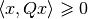 for all ).
The volume of ellipsoid is
(4)
where  is the volume of
the unit ball in :
is the volume of
the unit ball in :
(5)
The distance from to the fixed point  is
is
(6)
If , lies outside
; if
 , is a boundary
point of ; if
, is a boundary
point of ; if
 , is an internal
point of .
, is an internal
point of .
Given two ellipsoids, and , the distance between them is
(7)
If  ,
the ellipsoids have no common points; if
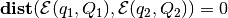, the
ellipsoids have one common point - they touch; if
,
the ellipsoids have no common points; if
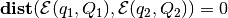, the
ellipsoids have one common point - they touch; if
 , the
ellipsoids intersect.
, the
ellipsoids intersect.
Finding using QCQP is

subject to:
where

Checking if  nondegenerate ellipsoids
nondegenerate ellipsoids
 have nonempty
intersection, can be cast as a quadratically constrained quadratic
programming (QCQP) problem:
have nonempty
intersection, can be cast as a quadratically constrained quadratic
programming (QCQP) problem:
subject to:

If this problem is feasible, the intersection is nonempty.
Definition. Given compact convex set , its polar
set, denoted , is

or, equivalently,

The properties of the polar set are
- If contains the origin,
 ;
; - If
 ,
;
,
; - For any nonsingular matrix , .
If a nondegenerate ellipsoid contains the origin, its polar set is also an ellipsoid:
The special case is

Definition. Given compact sets
 , their
geometric (Minkowski) sum is
, their
geometric (Minkowski) sum is
(8)
Definition. Given two compact sets , their geometric (Minkowski) difference is
(9)
Ellipsoidal calculus concerns the following set of operations:
- affine transformation of ellipsoid;
- geometric sum of finite number of ellipsoids;
- geometric difference of two ellipsoids;
- intersection of finite number of ellipsoids.
These operations occur in reachability calculation and verification of piecewise affine dynamical systems. The result of all of these operations, except for the affine transformation, is not generally an ellipsoid but some convex set, for which we can compute external and internal ellipsoidal approximations.
Additional operations implemented in the Ellipsoidal Toolbox include external and internal approximations of intersections of ellipsoids with hyperplanes, halfspaces and polytopes.
Definition. Hyperplane  in
is the set
in
is the set
(10)
with  and
and  fixed.
The distance from ellipsoid to
hyperplane is
fixed.
The distance from ellipsoid to
hyperplane is
(11)
If  , the ellipsoid
and the hyperplane do not intersect; if
, the hyperplane is a
supporting hyperplane for the ellipsoid; if
, the ellipsoid
and the hyperplane do not intersect; if
, the hyperplane is a
supporting hyperplane for the ellipsoid; if
 , the ellipsoid
intersects the hyperplane. The intersection of an ellipsoid with a
hyperplane is always an ellipsoid and can be computed directly.
, the ellipsoid
intersects the hyperplane. The intersection of an ellipsoid with a
hyperplane is always an ellipsoid and can be computed directly.
Checking if the intersection of nondegenerate ellipsoids
intersects hyperplane
, is equivalent to the feasibility check of the QCQP
problem:
subject to:

A hyperplane defines two (closed) halfspaces:
(12)
and
(13)
To avoid confusion, however, we shall further assume that a hyperplane
specifies the halfspace in the sense (12).
In order to refer to the other halfspace, the same hyperplane should be
defined as .
The idea behind the calculation of intersection of an ellipsoid with a
halfspace is to treat the halfspace as an unbounded ellipsoid, that is,
as the ellipsoid with the shape matrix all but one of whose eigenvalues
are  .
.
Definition. Polytope  is the
intersection of a finite number of closed halfspaces:
is the
intersection of a finite number of closed halfspaces:
(14)
wherein and
.
The distance
from ellipsoid to the polytope
is
(15)
where comes from
([dist:sub:point]). If
 , the ellipsoid and the
polytope do not intersect; if
, the ellipsoid and the
polytope do not intersect; if
 , the ellipsoid touches
the polytope; if
, the ellipsoid touches
the polytope; if  , the
ellipsoid intersects the polytope.
, the
ellipsoid intersects the polytope.
Checking if the intersection of nondegenerate ellipsoids
intersects polytope
is equivalent to the feasibility check of the QCQP
problem:
subject to:
Operations with Ellipsoids¶
Affine Transformation¶
The simplest operation with ellipsoids is an affine transformation. Let
ellipsoid , matrix
 and vector . Then
and vector . Then
(16)
Thus, ellipsoids are preserved under affine transformation. If the rows
of are linearly independent (which implies
), and  , the affine transformation is
called projection.
, the affine transformation is
called projection.
Geometric Sum¶
Consider the geometric sum (8) in which
 , are nondegenerate
ellipsoids ,
, are nondegenerate
ellipsoids ,
 . The resulting set is
not generally an ellipsoid. However, it can be tightly approximated by
the parametrized families of external and internal ellipsoids.
. The resulting set is
not generally an ellipsoid. However, it can be tightly approximated by
the parametrized families of external and internal ellipsoids.
Let parameter  be some nonzero vector in .
Then the external approximation
be some nonzero vector in .
Then the external approximation  and the
internal approximation
and the
internal approximation  of the sum
of the sum
 are
tight along direction , i.e.,
are
tight along direction , i.e.,
and
Here the center is
(17)
the shape matrix of the external ellipsoid  is
is
(18)
and the shape matrix of the internal ellipsoid  is
is
(19)
with matrices  , , being orthogonal
(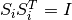) and such that vectors
, , being orthogonal
(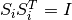) and such that vectors
 are parallel.
are parallel.
Varying vector we get exact external and internal
approximations,
For proofs of formulas given in this section, see [KUR1997], [KUR2000].
One last comment is about how to find orthogonal matrices
 that align vectors
that align vectors
 with
with  . Let
. Let
 and
and  be some unit vectors in .
We have to find matrix
be some unit vectors in .
We have to find matrix  such that
such that
 .
We suggest explicit formulas for the
calculation of this matrix [DAR2012]:
.
We suggest explicit formulas for the
calculation of this matrix [DAR2012]:
(20)
(21)
(22)![Q_1 = [q_1 \, q_2]\in \mathbb{R}^{n\times2},\ \quad q_1 = \hat{v_1},\ \quad q_2 = \begin{cases}
s^{-1}(\hat{v_2} - c\hat{v_1}),& s\ne 0\\
0,& s = 0.
\end{cases}](_images/math/61cdc81e61c3c602a3331b5cb5c6a816f38b2704.png)
Geometric Difference¶
Consider the geometric difference (9) in which the sets
and  are nondegenerate
ellipsoids and
. We say that ellipsoid
is bigger than ellipsoid
if
are nondegenerate
ellipsoids and
. We say that ellipsoid
is bigger than ellipsoid
if

If this condition is not fulfilled, the geometric difference is an empty set:

If is bigger than and is bigger than , in other words, if 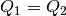,

To check if ellipsoid is bigger than
ellipsoid , we perform simultaneous
diagonalization of matrices  and
and  , that is, we
find matrix
, that is, we
find matrix  such that
such that

where  is some diagonal matrix. Simultaneous diagonalization
of and is possible because both are symmetric
positive definite (see [GANT1960]). To find such matrix
, we first do the SVD of :
is some diagonal matrix. Simultaneous diagonalization
of and is possible because both are symmetric
positive definite (see [GANT1960]). To find such matrix
, we first do the SVD of :
(23)
Then the SVD of matrix
 :
:
(24)
Now, is defined as
(25)
If the biggest diagonal element (eigenvalue) of matrix
is less than or equal to ,
 .
.
Once it is established that ellipsoid is
bigger than ellipsoid , we know that their
geometric difference
is a nonempty
convex compact set. Although it is not generally an ellipsoid, we can
find tight external and internal approximations of this set parametrized
by vector . Unlike geometric sum, however,
ellipsoidal approximations for the geometric difference do not exist for
every direction . Vectors for which the approximations do not
exist are called bad directions.
Given two ellipsoids and
with
, is a
bad direction if
in which  is a minimal root of the equation
is a minimal root of the equation

To find , compute matrix by (23)-(25)
and define

If is not a bad direction, we can find tight external and
internal ellipsoidal approximations  and
and
 such that
such that
and
The center is
(26)
the shape matrix of the internal ellipsoid  is
is

and the shape matrix of the external ellipsoid  is
is
(27)
Here is an orthogonal matrix such that vectors
and  are parallel. is
found from (20)-(22), with and
are parallel. is
found from (20)-(22), with and
 .
.
Running over all unit directions that are not bad, we get
For proofs of formulas given in this section, see [KUR1997].
Geometric Difference-Sum¶
Given ellipsoids , and , it is possible to compute families of external and internal approximating ellipsoids for
(28)
parametrized by direction , if this set is nonempty
().
First, using the result of the previous section, for any direction
that is not bad, we obtain tight external
 and internal
approximations of the set
.
and internal
approximations of the set
.
The second and last step is, using the result of section 2.2.2, to find
tight external ellipsoidal approximation
 of the sum
, and
tight internal ellipsoidal approximation
of the sum
, and
tight internal ellipsoidal approximation
 for the sum
.
for the sum
.
As a result, we get

and

Running over all unit vectors that are not bad, this
translates to

Geometric Sum-Difference¶
Given ellipsoids , and , it is possible to compute families of external and internal approximating ellipsoids for
(29)
parametrized by direction , if this set is nonempty
( ).
).
First, using the result of section 2.2.2, we obtain tight external
 and internal
and internal
 ellipsoidal approximations of the
set
ellipsoidal approximations of the
set  . In order
for the set (29) to be nonempty, inclusion
. In order
for the set (29) to be nonempty, inclusion
 must be
true for any . Note, however, that even if (29) is
nonempty, it may be that
, then
internal approximation for this direction does not exist.
must be
true for any . Note, however, that even if (29) is
nonempty, it may be that
, then
internal approximation for this direction does not exist.
Assuming that (29) is nonempty and
 , the second
step would be, using the results of section 2.2.3, to compute tight
external ellipsoidal approximation
of the difference
, the second
step would be, using the results of section 2.2.3, to compute tight
external ellipsoidal approximation
of the difference
 ,
which exists only if is not bad, and tight internal
ellipsoidal approximation
,
which exists only if is not bad, and tight internal
ellipsoidal approximation  of the
difference
,
which exists only if is not bad for this difference.
of the
difference
,
which exists only if is not bad for this difference.
If approximation exists, then
and

If approximation exists, then
and
For any fixed direction it may be the case that neither
external nor internal tight ellipsoidal approximations exist.
Intersection of Ellipsoid and Hyperplane¶
Let nondegenerate ellipsoid and hyperplane
be such that
. In other words,

The intersection of ellipsoid with hyperplane, if nonempty, is always an ellipsoid. Here we show how to find it.
First of all, we transform the hyperplane into
![H([1~0~\cdots~0]^T, 0)](_images/math/538a531654c5a33f2dee65b42f2ceee1e7bcb093.png) by the affine transformation
by the affine transformation
where is an orthogonal matrix found by (20)-(22)
with  and
and ![v_2=[1~0~\cdots~0]^T](_images/math/e2a4206b0fc420afa156e56f648b0700ce6fbf8e.png) . The ellipsoid in
the new coordinates becomes
. The ellipsoid in
the new coordinates becomes  with
with

Define matrix 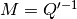; is its element in
position ,  is the first column of
is the first column of  without the first element, and is the submatrix of
obtained by stripping of its first row and first
column:
without the first element, and is the submatrix of
obtained by stripping of its first row and first
column:
![M = \left[\begin{array}{c|cl}
m_{11} & & \bar{m}^T\\
& \\
\hline
& \\
\bar{m} & & \bar{M}\end{array}\right].](_images/math/190dd89a565e4cbf5e8f76193e5a86101c1457eb.png)
The ellipsoid resulting from the intersection is with
![\begin{aligned}
w' & = q' + q_1'\left[\begin{array}{c}
-1\\
\bar{M}^{-1}\bar{m}\end{array}\right],\\
W' & = \left(1-q_1'^2(m_{11}-
\langle\bar{m},\bar{M}^{-1}\bar{m}\rangle)\right)\left[\begin{array}{c|cl}
0 & & {\bf 0}\\
& \\
\hline
& \\
{\bf 0} & & \bar{M}^{-1}\end{array}\right],\end{aligned}](_images/math/1f461c17d20992f2431d22c78516f852193d069a.png)
in which represents the first element of vector  .
.
Finally, it remains to do the inverse transform of the coordinates to obtain ellipsoid :
Intersection of Ellipsoid and Ellipsoid¶
Given two nondegenerate ellipsoids and
,
 implies that
implies that

This intersection can be approximated by ellipsoids from the outside and from the inside. Trivially, both and are external approximations of this intersection. Here, however, we show how to find the external ellipsoidal approximation of minimal volume.
Define matrices
Minimal volume external ellipsoidal approximation
 of the intersection
is determined
from the set of equations:
of the intersection
is determined
from the set of equations:
(30)
(31)
(32)
(33)
(34)
with  . We substitute
. We substitute  ,
,
 , defined in (31)-(33) into
(34) and get a polynomial of degree
, defined in (31)-(33) into
(34) and get a polynomial of degree  with respect to
with respect to
 , which has only one root in the interval
, which has only one root in the interval ![[0,1]](_images/math/e861e10e1c19918756b9c8b7717684593c63aeb8.png) ,
,
 . Then, substituting into
(30)-(33), we obtain and
. Then, substituting into
(30)-(33), we obtain and  . Special
cases are , whence
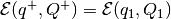, and
, whence
. Special
cases are , whence
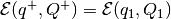, and
, whence
 . These situations
may occur if, for example, one ellipsoid is contained in the other:
. These situations
may occur if, for example, one ellipsoid is contained in the other:
The proof that the system of equations (30)-(34) correctly defines the minimal volume external ellipsoidal approximationi of the intersection is given in [ROS2002].
To find the internal approximating ellipsoid , define
(35)
(36)
Notice that (35) and (36) are QCQP problems. Parameters
and  are invariant with respect to affine
coordinate transformation and describe the position of ellipsoids
, with
respect to each other:
are invariant with respect to affine
coordinate transformation and describe the position of ellipsoids
, with
respect to each other:
![\beta_1\geqslant1,~\beta_2\geqslant1 & \Rightarrow
{\bf int}({\mathcal E}(q_1,Q_1)\cap{\mathcal E}(q_2,Q_2))=\emptyset, \\
\beta_1\geqslant1,~\beta_2\leqslant1 & \Rightarrow {\mathcal E}(q_1,Q_1)\subseteq{\mathcal E}(q_2,Q_2), \\
\beta_1\leqslant1,~\beta_2\geqslant1 & \Rightarrow {\mathcal E}(q_2,Q_2)\subseteq{\mathcal E}(q_1,Q_1), \\
\beta_1<1,~\beta_2<1 & \Rightarrow
{\bf int}({\mathcal E}(q_1,Q_1)\cap{\mathcal E}(q_2,Q_2))\neq\emptyset \\
&\mbox{and} ~ {\mathcal E}(q_1,Q_1)\not\subseteq{\mathcal E}(q_2,Q_2) \\
&\mbox{and} ~ {\mathcal E}(q_2,Q_2)\not\subseteq{\mathcal E}(q_1,Q_1).](_images/math/7c03a765cb1b25fd1f45a4c98464a5aa055ea900.png)
Define parametrized family of internal ellipsoids with
(37)
(38)
The best internal ellipsoid
 in the class (37)-(38), namely, such that
in the class (37)-(38), namely, such that

for all  , is specified by
the parameters
, is specified by
the parameters
(39)
with
It is the ellipsoid that we look for:
 .
Two special cases are
.
Two special cases are
and
The method of finding the internal ellipsoidal approximation of the intersection of two ellipsoids is described in [VAZ1999].
Intersection of Ellipsoid and Halfspace¶
Finding the intersection of ellipsoid and halfspace can be reduced to
finding the intersection of two ellipsoids, one of which is unbounded.
Let be a nondegenerate ellipsoid and let
define the halfspace
We have to determine if the intersection
 is empty, and if not,
find its external and internal ellipsoidal approximations,
and
is empty, and if not,
find its external and internal ellipsoidal approximations,
and  . Two
trivial situations are:
. Two
trivial situations are:
- and , which implies that ;
- and
 , so that
, so that
 , and then
, and then
 .
.
In case , i.e. the ellipsoid intersects the hyperplane,
with
(40)
(41)
 being the biggest eigenvalue of matrix
. After defining , we obtain
from equations (30)-(34), and
from (37)-(38),
(39).
being the biggest eigenvalue of matrix
. After defining , we obtain
from equations (30)-(34), and
from (37)-(38),
(39).
Remark. Notice that matrix  has rank , which
makes it singular for
has rank , which
makes it singular for  . Nevertheless, expressions
(30)-(31), (37)-(38) make sense because
is nonsingular,
. Nevertheless, expressions
(30)-(31), (37)-(38) make sense because
is nonsingular,  and
and
 .
.
To find the ellipsoidal approximations and
of the intersection of ellipsoid
and polytope ,
 , , such that
, , such that

we first compute
wherein  is the halfspace defined by the
first row of matrix
is the halfspace defined by the
first row of matrix  ,
,  , and the first element of
vector
, and the first element of
vector  , . Then, one by one, we get
, . Then, one by one, we get
![\begin{aligned}
& & {\mathcal E}(q^-_2,Q^-_2)\subseteq{\mathcal E}(q^-_1,Q^-_1)\cap{\bf S}(c_2,\gamma_2), ~~~
{\mathcal E}(q^+_1,Q^+_1)\cap{\bf S}(c_2,\gamma_2)\subseteq{\mathcal E}(q^+_2,Q^+_2), \\
& & {\mathcal E}(q^-_3,Q^-_3)\subseteq{\mathcal E}(q^-_2,Q^-_2)\cap{\bf S}(c_3,\gamma_3), ~~~
{\mathcal E}(q^+_2,Q^+_2)\cap{\bf S}(c_3,\gamma_3)\subseteq{\mathcal E}(q^+_3,Q^+_3), \\
& & \cdots \\
& & {\mathcal E}(q^-_m,Q^-_m)\subseteq{\mathcal E}(q^-_{m-1},Q^-_{m-1})\cap{\bf S}(c_m,\gamma_m), ~~~
{\mathcal E}(q^+_{m-1},Q^+_{m-1})\cap{\bf S}(c_m,\gamma_m)\subseteq{\mathcal E}(q^+_m,Q^+_m), \\\end{aligned}](_images/math/31219576174d72fc7ceedf88d2464117992bc863.png)
The resulting ellipsoidal approximations are

Checking if one ellipsoid contains another¶
Theorem of alternatives, also known as -procedure [BOYD2004],
states that the implication
where are symmetric matrices,
,  , , holds if
and only if there exists
, , holds if
and only if there exists  such that
such that
By -procedure,
 (both
ellipsoids are assumed to be nondegenerate) if and only if the following
SDP problem is feasible:
(both
ellipsoids are assumed to be nondegenerate) if and only if the following
SDP problem is feasible:
subject to:
![\begin{aligned}
\lambda & > 0, \\
\left[\begin{array}{cc}
Q_2^{-1} & -Q_2^{-1}q_2\\
(-Q_2^{-1}q_2)^T & q_2^TQ_2^{-1}q_2-1\end{array}\right]
& \preceq
\lambda \left[\begin{array}{cc}
Q_1^{-1} & -Q_1^{-1}q_1\\
(-Q_1^{-1}q_1)^T & q_1^TQ_1^{-1}q_1-1\end{array}\right]\end{aligned}](_images/math/2eac5dc4401c091596e10c578d9ded87c2949057.png)
where  is the variable.
is the variable.
Minimum Volume Ellipsoids¶
The minimum volume ellipsoid that contains set is called
Löwner-John ellipsoid of the set . To characterize it we
rewrite general ellipsoid as
where
For positive definite matrix , the volume of
is proportional to  . So,
finding the minimum volume ellipsoid containing can be
expressed as semidefinite programming (SDP) problem
. So,
finding the minimum volume ellipsoid containing can be
expressed as semidefinite programming (SDP) problem

subject to:

where the variables are and
 , and there is an implicit constraint
, and there is an implicit constraint
 ( is positive definite). The objective and
constraint functions are both convex in and
( is positive definite). The objective and
constraint functions are both convex in and  , so this
problem is convex. Evaluating the constraint function, however, requires
solving a convex maximization problem, and is tractable only in certain
special cases.
, so this
problem is convex. Evaluating the constraint function, however, requires
solving a convex maximization problem, and is tractable only in certain
special cases.
For a finite set , an
ellipsoid covers if and only if it covers its convex hull. So,
finding the minimum volume ellipsoid covering is the same as
finding the minimum volume ellipsoid containing the polytope
. The SDP problem is
subject to:

We can find the minimum volume ellipsoid containing the union of
ellipsoids  . Using the fact
that for
. Using the fact
that for  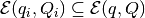 if and only if
there exists such that
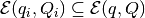 if and only if
there exists such that
![\left[\begin{array}{cc}
A^2 - \lambda_i Q_i^{-1} & Ab + \lambda_i Q_i^{-1}q_i\\
(Ab + \lambda_i Q_i^{-1}q_i)^T & b^Tb-1 - \lambda_i (q_i^TQ_i^{-1}q_i-1) \end{array}
\right] \preceq 0 .](_images/math/1bfb56594f142b4711e1763c166a8c381fb9c9c1.png)
Changing variable  , we get convex SDP in the
variables , , and
, we get convex SDP in the
variables , , and
 :
:
subject to:
![\begin{aligned}
\lambda_i & > 0,\\
\left[\begin{array}{ccc}
A^2-\lambda_iQ_i^{-1} & \tilde{b}+\lambda_iQ_i^{-1}q_i & 0 \\
(\tilde{b}+\lambda_iQ_i^{-1}q_i)^T & -1-\lambda_i(q_i^TQ_i^{-1}q_i-1) & \tilde{b}^T \\
0 & \tilde{b} & -A^2\end{array}\right] & \preceq 0, ~~~ i=1..m.\end{aligned}](_images/math/0eca2ec71db07c3ea6e83c1162bf851b970dc391.png)
After and are found,

The results on the minimum volume ellipsoids are explained and proven in [BOYD2004].
Maximum Volume Ellipsoids¶
Consider a problem of finding the maximum volume ellipsoid that lies
inside a bounded convex set with nonempty interior. To
formulate this problem we rewrite general ellipsoid
as

where , so the volume of is
proportional to  .
.
The maximum volume ellipsoid that lies inside can be found by
solving the following SDP problem:

subject to:
in the variables - symmetric matrix,
and  , with implicit constraint
, with implicit constraint  ,
where is the indicator function:
,
where is the indicator function:

In case of polytope, with defined in
(14), the SDP has the form
subject to:

We can find the maximum volume ellipsoid that lies inside the
intersection of given ellipsoids
 . Using the fact that for
if and only if there exists such that
. Using the fact that for
if and only if there exists such that
To find the maximum volume ellipsoid, we solve convex SDP in variables
 , , and :
, , and :
subject to:
After and are found,

The results on the maximum volume ellipsoids are explained and proven in [BOYD2004].
References
| [DAR2012] | A. N. Dariyn and A. B. Kurzhanski. Method of invariant sets for linear systems of high dimensionality under uncertain disturbances. Doklady Akademii Nauk, 446(6):607–611, 2012. |
| [GANT1960] |
|
| [ROS2002] | F. Thomas L. Ros, A. Sabater. An Ellipsoidal Calculus Based on Propagation and Fusion. IEEE Transactions on Systems, Man and Cybernetics, Part B: Cybernetics, 32(4), 2002. |
| [VAZ1999] | A. Yu. Vazhentsev. On Internal Ellipsoidal Approximations for Problems of Control and Synthesis with Bounded Coordinates. Izvestiya Rossiiskoi Akademii Nauk. Teoriya i Systemi Upravleniya., 1999. |
| [BOYD2004] | (1, 2, 3)
|